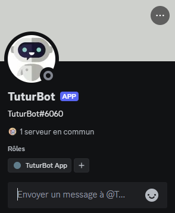
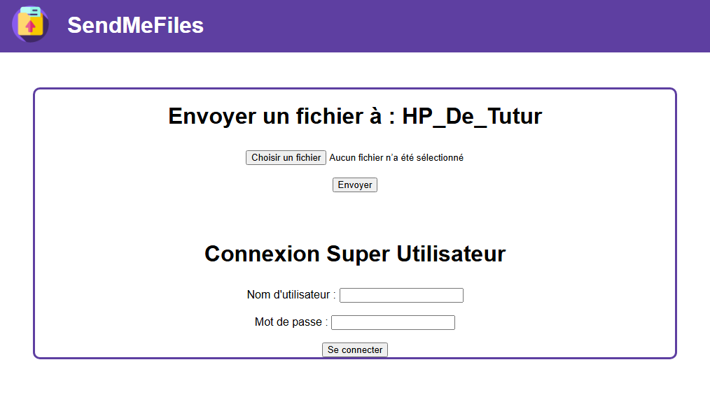
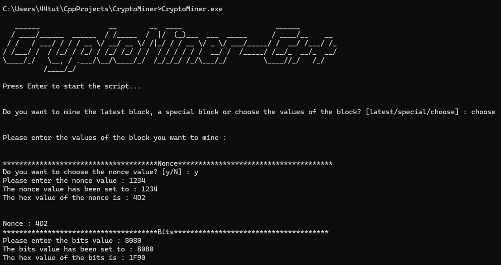
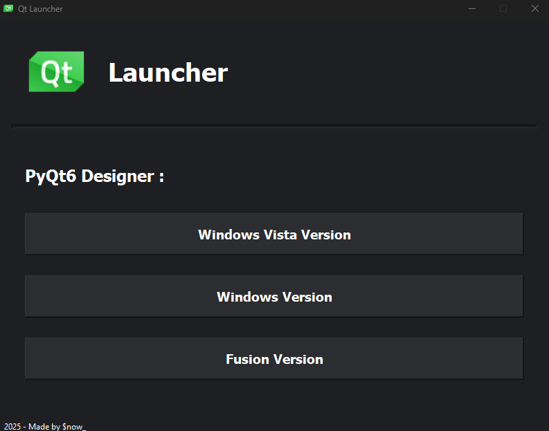
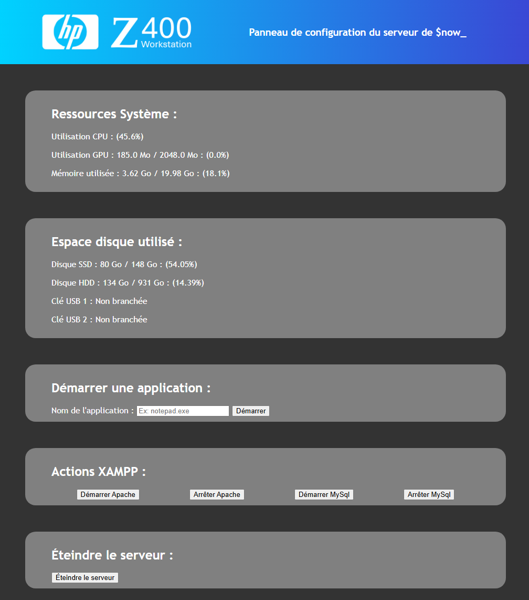
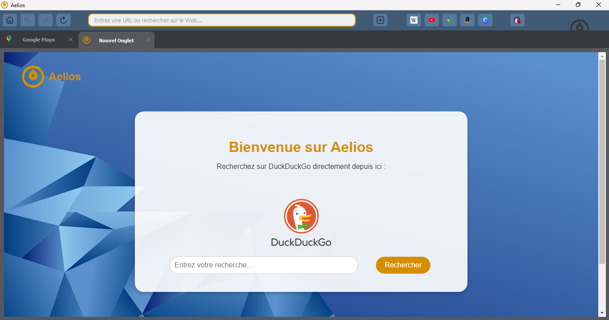
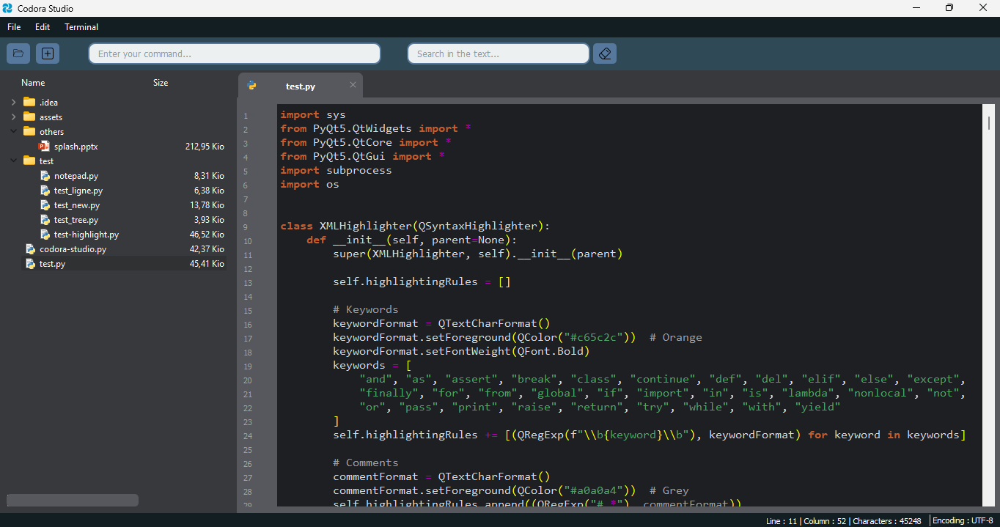
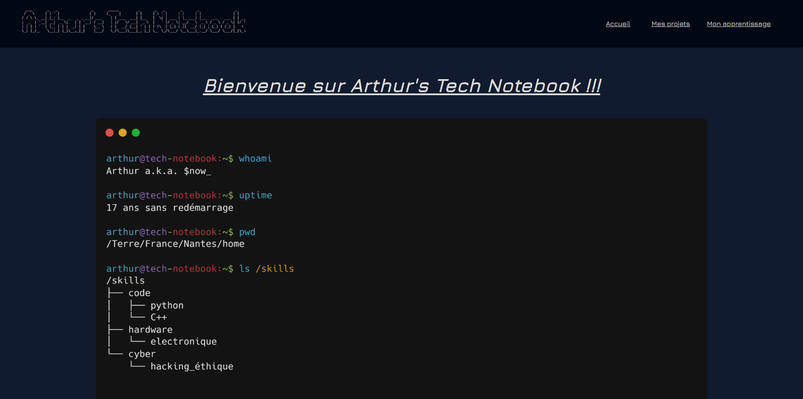

Mes projets informatique :
Tuturbot : Un robot conversationnel pour le réseau social Discord

Ceci est un petit projet de robot conversationnel avec lequel il est possible d'intéragir sur le réseau social Discord
Il peut comprendre certaine phrases simples et y répondre.
Il sait également reconnaître certaines injures et donner un avertissement à son envoyeur.
Il n'est en rien une intelligence artificielle, il n'utilise que des boucles conditionnelles pour agir. Peut-être qu'un jour, lorsque j'aurai les connaissances, je me lancerai dans la création d'un petit modèle de vrai robot conversationnel.
Langage utilisé : Python
Nombre de lignes de code : 110
État du projet : Actuellement en pause ⏸️
Il peut comprendre certaine phrases simples et y répondre.
Il sait également reconnaître certaines injures et donner un avertissement à son envoyeur.
Il n'est en rien une intelligence artificielle, il n'utilise que des boucles conditionnelles pour agir. Peut-être qu'un jour, lorsque j'aurai les connaissances, je me lancerai dans la création d'un petit modèle de vrai robot conversationnel.
SendMeFiles : Une Application Web de transfert de fichiers simple et rapide

Cette idée de projet m'est venue après des difficultés à transférer des fichiers entre ma tablette et mon ordinateur.
Le principe est simple, la personne sur ordinateur démarre le logiciel qui ouvre un petit serveur Web Flask. Ensuite la personne qui est sur un autre appareil tape dans un navigateur l'adresse IPv4 du premier ordinateur. La page d'accueil apparaît et il est alors possible d'envoyer des fichiers grâce au réseau.
Notez que le receveur peut choisir les extensions de fichiers acceptées et peut également définir un limite de taille de fichiers.
Langages utilisés : Python / HTML/CSS
Nombre de lignes de code : 974
État du projet : Actuellement terminé ✅ -- Version 2.0
Lien du projet : SendMeFiles - Dépôt GitHub
Le principe est simple, la personne sur ordinateur démarre le logiciel qui ouvre un petit serveur Web Flask. Ensuite la personne qui est sur un autre appareil tape dans un navigateur l'adresse IPv4 du premier ordinateur. La page d'accueil apparaît et il est alors possible d'envoyer des fichiers grâce au réseau.
Notez que le receveur peut choisir les extensions de fichiers acceptées et peut également définir un limite de taille de fichiers.
CryptoMiner-C++ : Un programme pour exécuter des calculs cryptographiques de minage de Bitcoin

Ce projet permet de réaliser les mêmes calculs cryptographiques que les mineurs de Bitcoin.
Il est possible de choisir entre miner le dernier bloc, miner un certain bloc en fonction de son numéro ou bien miner un bloc fictif avec ses propres valeurs.
Langage utilisé : C++
Nombre de lignes de code : 240
État du projet : Actuellement en cours ▶️
Il est possible de choisir entre miner le dernier bloc, miner un certain bloc en fonction de son numéro ou bien miner un bloc fictif avec ses propres valeurs.
QtLauncher : Un lanceur d'applications pour PyQt Designer

Ce projet m'est très utile pour pouvoir utiliser le logiciel PyQt Designer
Lors de son ouverture, le launcher PyQt Designer demande s'il faut ouvrir le logiciel en mode "Fusion", "Windows Vista", "Windows", "Macintosh" ou bien "Gtk". Chaque mode permettant de créer des applications avec des visuels différents. Certains modes étant réservés à certains OS en particulier.
Langage utilisé : Python / XML
Nombre de lignes de code : 564
État du projet : Actuellement terminé ✅ -- Version 1.1
Lien du projet : PyQt-Launcher - Dépôt GitHub
Lors de son ouverture, le launcher PyQt Designer demande s'il faut ouvrir le logiciel en mode "Fusion", "Windows Vista", "Windows", "Macintosh" ou bien "Gtk". Chaque mode permettant de créer des applications avec des visuels différents. Certains modes étant réservés à certains OS en particulier.
Server Control : Un panneau de configuration pour mon serveur personnel distant

Ce projet est une application Web qui vise à être un panneau de configuration pour mon serveur personnel distant.
Il me permet de contrôler les ressources systèmes utilisées comme le CPU, le GPU et la RAM mais aussi l'utilisation de ses périphériques de stockage.
Il m'est également possible de démarrer certaines applications ou services comme Apache ou MySQL.
Langage utilisé : Python / HTML/CSS
Nombre de lignes de code : 262
État du projet : Actuellement terminé ✅ -- Version 1.0
Il me permet de contrôler les ressources systèmes utilisées comme le CPU, le GPU et la RAM mais aussi l'utilisation de ses périphériques de stockage.
Il m'est également possible de démarrer certaines applications ou services comme Apache ou MySQL.
Aelios Browser : Un navigateur Chromium plus respectueux de la vie privée

Aelios Browser est un navigateur Chromium réalisé avec PyQt
Il a un design très épuré, pas de fonctionnalités inutiles et arrive avec des sites favoris prédéfinis. Il peut même lire des vidéos Youtube (Mais HTTP Live n'est pas pris en charge).
Il dispose même d'un mode "Tor" qui lorsqu'il est activé permet de faire passer le trafic sur le réseau Tor, juste avec un seul bouton !
Langage utilisé : Python
Nombre de lignes de code : 777
État du projet : Actuellement terminé ✅ -- Version 1.0
Lien du projet : Aelios-Browser - Dépôt GitHub
Il a un design très épuré, pas de fonctionnalités inutiles et arrive avec des sites favoris prédéfinis. Il peut même lire des vidéos Youtube (Mais HTTP Live n'est pas pris en charge).
Il dispose même d'un mode "Tor" qui lorsqu'il est activé permet de faire passer le trafic sur le réseau Tor, juste avec un seul bouton !
Codora Studio : Un IDE Python simple, fonctionnel, épuré

Codora Studio est un IDE Python réalisé avec PyQt
Il a un design très épuré sans fonctionnalités inutiles. Il est fait uniquement pour le Python et devient alors une alternative viable à des IDEs comme Notepad++ qui eux sont assez généralistes et perdent donc en fiabilité. En effet, un logiciel ne devrait faire qu'une seule chose mais la faire bien.
C'est le logiciel que j'aurai rêvé avoir dans mes débuts en programmation Python
Langage utilisé : Python
Nombre de lignes de code : 1173
État du projet : Actuellement en cours ▶️
Il a un design très épuré sans fonctionnalités inutiles. Il est fait uniquement pour le Python et devient alors une alternative viable à des IDEs comme Notepad++ qui eux sont assez généralistes et perdent donc en fiabilité. En effet, un logiciel ne devrait faire qu'une seule chose mais la faire bien.
C'est le logiciel que j'aurai rêvé avoir dans mes débuts en programmation Python
Arthur's Tech Notebook : Un site Web pour exposer mes projets dans le domaine de l'informatique

Ce site Web est le premier que je publie et a été réalisé à la main en HTML et CSS
Il sert à exposer mes projets dans le domaine de l'informatique et de l'électronique en passant par le hacking éthique. J'y parle également de mon parcours dans ce domaine et des moyens d'apprentissages utilisés.
Je mets également pour un certain nombre de mes projets, des liens vers leurs dépôts GitHub respectifs.
Langage utilisé : HTML/CSS
Nombre de lignes de code : 983
État du projet : Actuellement terminé ✅
Lien du projet : Arthur's Tech Notebook - Dépôt GitHub
Il sert à exposer mes projets dans le domaine de l'informatique et de l'électronique en passant par le hacking éthique. J'y parle également de mon parcours dans ce domaine et des moyens d'apprentissages utilisés.
Je mets également pour un certain nombre de mes projets, des liens vers leurs dépôts GitHub respectifs.